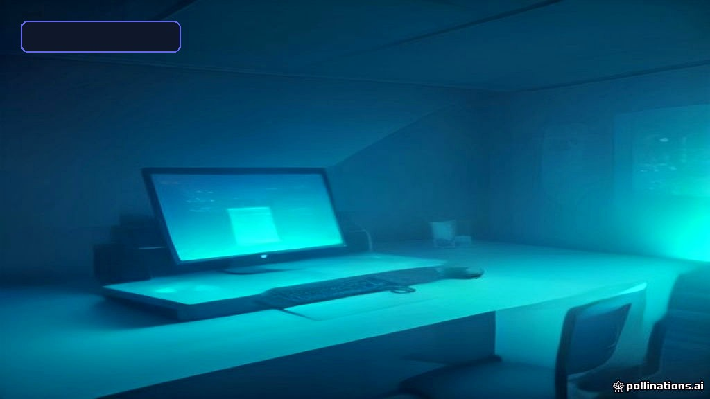
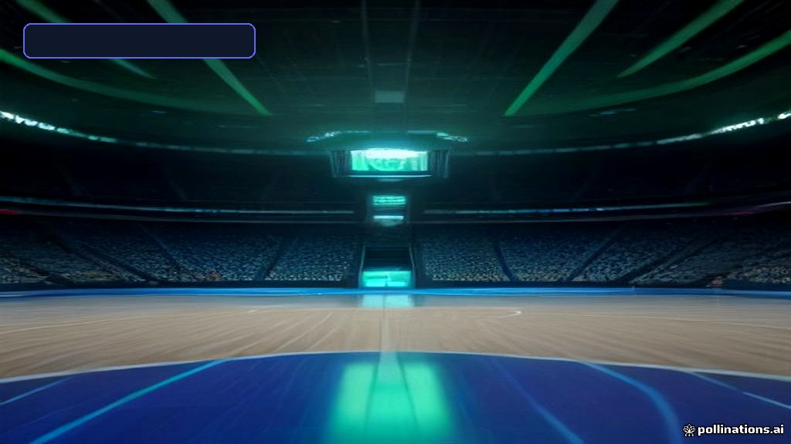

<!DOCTYPE html>
<html lang="en" class="scroll-smooth">
<head>
    <meta charset="UTF-8">
    <meta name="viewport" content="width=device-width, initial-scale=1.0">
    <title>Everything Search Engine 2026: The Ultimate Guide to Voidtools Instant Windows Search | LatestTech Hub</title>
    <meta name="description" content="Master Voidtools Everything search utility in 2026. Discover instant NTFS file indexing, Regex power searches, Everything Server setup, and expert tips.">
    <meta name="author" content="LatestTech Editorial Team">
    <link rel="canonical" href="https://jtbsocial.github.io/latesttech/posts/everything-search-engine-2026-the-ultimate-guide-to-voidtool.html">
    
    <!-- Open Graph / SEO -->
    <meta property="og:type" content="article">
    <meta property="og:title" content="Everything Search Engine 2026: The Ultimate Guide to Voidtools Instant Windows Search">
    <meta property="og:description" content="Master Voidtools Everything search utility in 2026. Discover instant NTFS file indexing, Regex power searches, Everything Server setup, and expert tips.">
    <meta property="og:image" content="https://jtbsocial.github.io/latesttech/assets/images/everything-search-engine-2026-the-ultimate-guide-to-voidtool-featured.jpg">
    <meta name="twitter:card" content="summary_large_image">
    <meta name="p:domain_verify" content="cfb450e2c89091ff91473d4d9fb9c5d1"/>
    
    <!-- Google Fonts & Tailwind CDN -->
    <link rel="preconnect" href="https://fonts.googleapis.com">
    <link rel="preconnect" href="https://fonts.gstatic.com" crossorigin>
    <link href="https://fonts.googleapis.com/css2?family=Outfit:wght@500;600;700;800&family=Plus+Jakarta+Sans:wght@400;500;600;700;800&display=swap" rel="stylesheet">
    <script src="https://cdn.tailwindcss.com?plugins=typography"></script>
    <script>
        tailwind.config = {
            darkMode: 'class',
            theme: {
                extend: {
                    fontFamily: {
                        sans: ['Plus Jakarta Sans', 'sans-serif'],
                        display: ['Outfit', 'sans-serif'],
                    },
                    colors: {
                        primary: { 50: '#eef2ff', 100: '#e0e7ff', 500: '#6366f1', 600: '#4f46e5', 700: '#4338ca' }
                    }
                }
            }
        }
    </script>
    <link rel="stylesheet" href="../assets/css/style.css">
    
    <script type="application/ld+json">{"@context": "https://schema.org", "@type": "FAQPage", "mainEntity": [{"@type": "Question", "name": "How does Voidtools Everything search files so much faster than Windows Search?", "acceptedAnswer": {"@type": "Answer", "text": "Everything directly parses the raw Master File Table (MFT) on NTFS drives and monitors the USN change journal in real time, bypassing file content scanning to index millions of file names in seconds."}}, {"@type": "Question", "name": "Can Voidtools Everything search inside file contents or compressed archives?", "acceptedAnswer": {"@type": "Answer", "text": "Everything focuses primarily on instant file and path name indexing. However, it offers a content search modifier (`content:keywords`) and integrates with command line tools to search inside archives or script workflows."}}, {"@type": "Question", "name": "Is Voidtools Everything completely free for commercial and personal use?", "acceptedAnswer": {"@type": "Answer", "text": "Yes, Voidtools Everything is 100% freeware for both personal and commercial environments, offering full access to standard installers, portable versions, and server plugins without ads or paywalls."}}, {"@type": "Question", "name": "What is the Everything Server and how does network indexing work?", "acceptedAnswer": {"@type": "Answer", "text": "The Everything Server plugin lets a master machine host its file index across a network. Client machines running Everything can connect remotely to search massive shared drives without overwhelming network bandwidth."}}, {"@type": "Question", "name": "Does Everything consume high background memory or CPU resources?", "acceptedAnswer": {"@type": "Answer", "text": "No. Everything is renowned for its lightweight footprint, typically requiring less than 15 MB to 30 MB of RAM and under 1% CPU usage while running quietly in the background."}}]}</script>
</head>
<body class="bg-slate-50 dark:bg-slate-950 text-slate-800 dark:text-slate-100 min-h-screen flex flex-col font-sans transition-colors duration-200 antialiased">
    <!-- Navbar -->
    <header class="sticky top-0 z-50 backdrop-blur-md bg-white/90 dark:bg-slate-900/90 border-b border-slate-200/80 dark:border-slate-800/80 shadow-sm">
        <div class="max-w-5xl mx-auto px-4 sm:px-6 py-4 flex items-center justify-between">
            <a href="../index.html" class="flex items-center gap-2 text-2xl font-black font-display bg-gradient-to-r from-indigo-600 to-violet-600 bg-clip-text text-transparent">
                ⚡ LatestTech Hub
            </a>
            <nav class="hidden md:flex items-center gap-8 text-sm font-bold text-slate-600 dark:text-slate-300">
                <a href="../index.html" class="hover:text-indigo-600 dark:hover:text-indigo-400 transition-colors">Home</a>
                <a href="../about.html" class="hover:text-indigo-600 dark:hover:text-indigo-400 transition-colors">About</a>
                <a href="../contact.html" class="hover:text-indigo-600 dark:hover:text-indigo-400 transition-colors">Contact</a>
                <a href="../privacy-policy.html" class="hover:text-indigo-600 dark:hover:text-indigo-400 transition-colors">Privacy</a>
            </nav>
            <div class="flex items-center gap-3">
                <button id="themeToggle" class="p-2.5 rounded-xl bg-slate-100 dark:bg-slate-800 text-slate-600 dark:text-slate-300 hover:bg-slate-200 transition-colors" aria-label="Toggle Theme">
                    🌙
                </button>
            </div>
        </div>
    </header>

    <div id="progressBar" class="fixed top-0 left-0 h-1.5 bg-gradient-to-r from-indigo-500 via-purple-500 to-pink-500 z-50 transition-all duration-150" style="width: 0%"></div>

    <main class="max-w-7xl mx-auto px-4 sm:px-6 lg:px-8 py-12 flex-grow">
        <!-- Breadcrumb -->
        <nav class="flex items-center gap-2 text-xs text-slate-500 dark:text-slate-400 mb-8 font-semibold uppercase tracking-wider">
            <a href="../index.html" class="hover:text-indigo-600">Home</a> &rsaquo;
            <span class="text-indigo-600 dark:text-indigo-400">Tech Trends</span> &rsaquo;
            <span class="truncate max-w-[200px] text-slate-400">Everything Search Engine 2026: The Ultimate Guide to Voidtools Instant Windows Search</span>
        </nav>

        <!-- Two-Column Layout: Article + Sidebar -->
        <div class="grid grid-cols-1 lg:grid-cols-[1fr_320px] gap-10 items-start">
            
            <!-- LEFT: Main Article -->
            <article class="bg-white dark:bg-slate-900 rounded-3xl p-6 sm:p-10 lg:p-12 shadow-sm border border-slate-100 dark:border-slate-800">
                <div class="flex items-center gap-3 mb-6">
                    <span class="px-3.5 py-1.5 bg-indigo-600 text-white rounded-xl text-xs font-black uppercase tracking-wider shadow-sm">Tech Trends</span>
                    <span class="text-xs font-semibold text-slate-400">&bull; 2026-10-25</span>
                    <span class="text-xs font-semibold text-slate-400">&bull; ⏱️ 9 min read</span>
                </div>

                <h1 class="text-3xl sm:text-4xl font-black font-display leading-[1.15] text-slate-900 dark:text-white mb-6">
                    Everything Search Engine 2026: The Ultimate Guide to Voidtools Instant Windows Search
                </h1>

                <p class="text-lg text-slate-600 dark:text-slate-300 mb-8 leading-relaxed font-medium">
                    Master Voidtools Everything search utility in 2026. Discover instant NTFS file indexing, Regex power searches, Everything Server setup, and expert tips.
                </p>

                <div class="mb-10 rounded-2xl overflow-hidden shadow-xl border border-slate-100 dark:border-slate-800 aspect-video">
                    
                </div>

                
        <div class="my-10 p-6 border-2 border-dashed border-slate-200 dark:border-slate-800 rounded-2xl text-center bg-slate-50/50 dark:bg-slate-900/40 text-xs font-semibold text-slate-400">
            <span>SPONSORED ADVERTISEMENT</span>
            <div class="min-h-[100px] flex items-center justify-center font-mono text-slate-300 dark:text-slate-600 mt-2">
                <!-- Google AdSense Responsive Slot -->
            </div>
        </div>
        

                <!-- Rendered Article Body -->
                <div class="article-body">
                    <h2 id="toc-0" id="executive-summary-key-takeaways">⚡ Executive Summary / Key Takeaways</h2>
<ul>
<li><strong>Instantaneous Search Velocity:</strong> <a href="https://jtbsocial.github.io/latesttech/posts/everything-search-engine-by-voidtools-the-ultimate-2026-mast.html">Voidtools</a> Everything indexes millions of files across NTFS drives in less than two seconds by reading the raw Master File Table (MFT).</li>
<li><strong>Microscopic Resource Footprint:</strong> Operates on less than 15 MB of RAM and minimal CPU cycles, outperforming bloated native operating system search tools.</li>
<li><strong>Power-User Extensibility:</strong> Features robust support for Regular Expressions (Regex), Boolean operators, file extension parameters, and custom command-line interfaces (CLI).</li>
<li><strong>Network Indexing Capability:</strong> Includes a built-in HTTP/FTP server and Everything Server plugin to share and query indexes seamlessly across local networks.</li>
<li><strong>100% Freeware:</strong> Totally free for personal and commercial deployment, with portable editions requiring zero background installer noise.</li>
</ul>
<hr />
<h2 id="toc-1" id="table-of-contents">Table of Contents</h2>
<div style="margin: 2.5rem 0; padding: 1.75rem; background: linear-gradient(135deg, #4f46e5 0%, #7c3aed 100%); border-radius: 1.25rem; color: white; box-shadow: 0 15px 30px -5px rgba(0, 0, 0, 0.25);">
    <div style="display: flex; align-items: flex-start; gap: 1rem; flex-wrap: wrap;">
        <div style="flex: 1; min-width: 250px;">
            <span style="display: inline-block; padding: 0.3rem 0.8rem; background: rgba(255,255,255,0.2); border-radius: 0.5rem; font-size: 0.75rem; font-weight: 800; letter-spacing: 0.05em; margin-bottom: 0.75rem;">🔥 STAFF PICK</span>
            <h4 style="font-size: 1.35rem; font-weight: 900; margin: 0 0 0.5rem 0; line-height: 1.25;">Supercharge Your Workflow with Top AI Tools</h4>
            <p style="font-size: 0.95rem; opacity: 0.95; margin: 0 0 1.25rem 0; line-height: 1.6;">Explore the 10 best free AI productivity tools that are automating 90% of daily work for professionals in 2026.</p>
            <a href="https://jtbsocial.github.io/latesttech/posts/top-10-free-ai-productivity-tools-that-will-automate-90-of-y.html" style="display: inline-block; padding: 0.8rem 1.6rem; background: white; color: #0f172a; font-weight: 900; border-radius: 0.85rem; text-decoration: none; font-size: 0.9rem; box-shadow: 0 4px 12px rgba(0,0,0,0.15); transition: transform 0.2s;">Explore Top AI Tools →</a>
        </div>
    </div>
</div>

<ol>
<li><a href="#the-crisis-of-windows-file-indexing">The Crisis of Windows File Indexing</a></li>
<li><a href="#what-is-voidtools-everything-architecture--mechanics">What is Voidtools Everything? Architecture &amp; Mechanics</a></li>
<li><a href="#key-features--system-capabilities">Key Features &amp; System Capabilities</a></li>
<li><a href="#performance-benchmarks-everything-vs-competitors">Performance Benchmarks: Everything vs. Competitors</a></li>
<li><a href="#mastering-everything-search-syntax--regex">Mastering Everything Search Syntax &amp; Regex</a></li>
<li><a href="#how-to-index-custom-containers-archives--remote-storage">How to Index Custom Containers, Archives &amp; Remote Storage</a></li>
<li><a href="#setting-up-everything-server--cli-tools">Setting Up Everything Server &amp; CLI Tools</a></li>
<li><a href="#pros-cons--user-suitability-breakdown">Pros, Cons &amp; User Suitability Breakdown</a></li>
<li><a href="#step-by-step-installation--best-configuration-settings">Step-by-Step Installation &amp; Best Configuration Settings</a></li>
<li><a href="#final-verdict">Final Verdict</a></li>
</ol>
<hr />
<h2 id="toc-2" id="the-crisis-of-windows-file-indexing">The Crisis of Windows File Indexing</h2>
<p>In an era dominated by multi-terabyte NVMe SSDs and expansive digital asset collections, traditional operating system search mechanisms remain frustratingly sluggish. Anyone who has ever attempted to search for a deeply nested file using default Windows Search knows the pain: a crawling green status bar, heavy disk read churn, unhelpful results, and high background CPU consumption.</p>
<p>Whether you are a developer <a href="https://jtbsocial.github.io/latesttech/posts/delta-flight-status-master-guide-2026-real-time-ai-tracking-.html">tracking</a> code repositories, a gamer locating raw <code>.pak</code> assets and config files, a video editor organizing terabytes of footage, or an IT administrator managing network storage, standard file search is a massive bottleneck. </p>
<p>Enter <strong>Voidtools Everything</strong>—the legendary desktop search utility that transforms file retrieval into a sub-second, instantaneous experience. In this definitive 2026 guide, we unpack why Everything remains the single most essential software utility for modern PCs, how it works under the hood, and how you can leverage its full feature set.</p>
<hr />
<h2 id="toc-3" id="what-is-voidtools-everything-architecture-mechanics">What is Voidtools Everything? Architecture &amp; Mechanics</h2>
<p>Developed by David Carpenter of Voidtools, <strong>Everything</strong> is a lightweight, freeware search utility designed exclusively for Windows OS. Unlike traditional search indexing tools that painstakingly read every file header and content block line-by-line, Everything uses a radically efficient architecture.</p>
<pre><code>+-----------------------------------------------------------------------+
|                         NTFS Volume / Storage                         |
+-----------------------------------------------------------------------+
                                   |
                                   v
+-----------------------------------------------------------------------+
|                   Master File Table (MFT) Access                      |
+-----------------------------------------------------------------------+
                                   |
                                   v
+-----------------------------------------------------------------------+
|            Everything Indexer (RAM-Based String Mapping)              |
+-----------------------------------------------------------------------+
                                   |
                                   v
+-----------------------------------------------------------------------+
|              Sub-Second Instant UI Query Results Display              |
+-----------------------------------------------------------------------+
</code></pre>
<h3 id="how-everything-achieves-sub-second-searches">How Everything Achieves Sub-Second Searches</h3>
<ol>
<li><strong>Direct MFT Parsing:</strong> When launched with administrator privileges (or via the lightweight Everything Service), the tool opens the NTFS Master File Table (MFT) directly. The MFT acts as a centralized directory metadata database maintained by Windows.</li>
<li><strong>In-Memory File Mapping:</strong> Everything builds a minimalist index in system RAM containing only file names, folder paths, and basic metadata. </li>
<li><strong>Real-Time Journal Monitoring:</strong> Once initialized, Everything listens directly to the NTFS USN (Update Sequence Number) Change Journal. Whenever a file is created, renamed, moved, or deleted, Windows logs the event in the USN journal, and Everything updates its index instantaneously without re-scanning disk surfaces.</li>
</ol>
<p>Because it indexes raw file names rather than full file contents by default, a fresh Windows installation with 1,000,000 files takes approximately <strong>1.0 to 1.5 seconds</strong> to index completely.</p>
<hr />
<h2 id="toc-4" id="key-features-system-capabilities">Key Features &amp; System Capabilities</h2>
<p>While the primary appeal of Everything is its sheer speed, the utility packages an array of high-grade technical tools suited for both everyday users and systems engineers:</p>
<ul>
<li><strong>Instant Search As You Type:</strong> Results update dynamically with every single keystroke.</li>
<li><strong>Minimal Resource Consumption:</strong> A clean installation typically consumes between 10 MB to 30 MB of RAM and near 0% CPU cycles when idle.</li>
<li><strong>Flexible Searching:</strong> Native support for wildcards (<code>*</code>, <code>?</code>), file extensions, path specifications, and full Regular Expression syntax.</li>
<li><strong>Multiple View Options:</strong> Supports thumbnail previews, detailed metadata columns (size, path, modification dates, attributes), and custom sorting.</li>
<li><strong>Remote Indexing &amp; Sharing:</strong> Built-in HTTP and FTP servers allow you to browse and search your host PC files securely over a browser or local network.</li>
<li><strong>CLI &amp; Language Support:</strong> Official Command-Line Interface binaries, Language Packs, and SDK libraries allow developers to embed Everything search functionality into automated scripts and third-party software.</li>
</ul>
<hr />
<h2 id="toc-5" id="performance-benchmarks-everything-vs-competitors">Performance Benchmarks: Everything vs. Competitors</h2>
<p>To demonstrate why Voidtools Everything dominates the desktop utility landscape, let us look at real-world benchmarks comparing raw indexing and search speeds across typical Windows setups in 2026.</p>
<table>
<thead>
<tr>
<th style="text-align: left;">Feature / Metric</th>
<th style="text-align: left;">Voidtools Everything 1.4/1.5</th>
<th style="text-align: left;">Native Windows 11 Search</th>
<th style="text-align: left;">Listary Pro</th>
<th style="text-align: left;">Everything Server Plugin</th>
</tr>
</thead>
<tbody>
<tr>
<td style="text-align: left;"><strong>Initial Index Time (1 Million Files)</strong></td>
<td style="text-align: left;">~1.2 Seconds</td>
<td style="text-align: left;">15 - 45 Minutes</td>
<td style="text-align: left;">~4.5 Seconds</td>
<td style="text-align: left;">~2.0 Seconds (Network)</td>
</tr>
<tr>
<td style="text-align: left;"><strong>Idle RAM Usage</strong></td>
<td style="text-align: left;">12 - 25 MB</td>
<td style="text-align: left;">150 - 400 MB</td>
<td style="text-align: left;">45 - 90 MB</td>
<td style="text-align: left;">20 - 50 MB</td>
</tr>
<tr>
<td style="text-align: left;"><strong>CPU Usage During Search</strong></td>
<td style="text-align: left;">&lt; 1%</td>
<td style="text-align: left;">15% - 40%</td>
<td style="text-align: left;">2% - 5%</td>
<td style="text-align: left;">&lt; 2%</td>
</tr>
<tr>
<td style="text-align: left;"><strong>MFT Direct Access</strong></td>
<td style="text-align: left;">Yes</td>
<td style="text-align: left;">No</td>
<td style="text-align: left;">Partial</td>
<td style="text-align: left;">Yes</td>
</tr>
<tr>
<td style="text-align: left;"><strong>Real-Time USN Tracking</strong></td>
<td style="text-align: left;">Yes</td>
<td style="text-align: left;">Slow File Watcher</td>
<td style="text-align: left;">Yes</td>
<td style="text-align: left;">Yes</td>
</tr>
<tr>
<td style="text-align: left;"><strong>HTTP/FTP Remote Access</strong></td>
<td style="text-align: left;">Native</td>
<td style="text-align: left;">None</td>
<td style="text-align: left;">None</td>
<td style="text-align: left;">Extended Server</td>
</tr>
<tr>
<td style="text-align: left;"><strong>License Model</strong></td>
<td style="text-align: left;">100% Free</td>
<td style="text-align: left;">Integrated</td>
<td style="text-align: left;">Freemium / Paid</td>
<td style="text-align: left;">100% Free</td>
</tr>
</tbody>
</table>
<hr />
<h2 id="toc-6" id="mastering-everything-search-syntax-regex">Mastering Everything Search Syntax &amp; Regex</h2>
<p>To unlock the true power of Everything, moving beyond simple keyword queries is essential. Everything uses a precise query language that lets you pinpoint files among millions in seconds.</p>
<h3 id="basic-search-operators">Basic Search Operators</h3>
<ul>
<li><strong>Space = AND:</strong> <code>video 2026</code> finds files containing both "video" AND "2026".</li>
<li><strong><code>|</code> = OR:</strong> <code>jpg|png</code> finds files with either .jpg OR .png extensions.</li>
<li><strong><code>!</code> = NOT:</strong> <code>!temp</code> excludes any path or file containing the word "temp".</li>
<li><strong><code>" "</code> = Exact Match:</strong> <code>"Project Alpha final"</code> finds the exact string phrase.</li>
</ul>
<h3 id="helpful-search-modifiers">Helpful Search Modifiers</h3>
<ul>
<li><code>ext:mp4;mkv;avi</code> – Limits search strictly to specified extensions.</li>
<li><code>path:d:\games</code> – Limits search results exclusively to the <code>D:\games</code> directory tree.</li>
<li><code>size:&gt;1gb</code> – Locates files strictly larger than 1 Gigabyte.</li>
<li><code>dm:today</code> – Filters files modified <a href="https://jtbsocial.github.io/latesttech/posts/everything-you-need-to-know-about-rocket-launch-today-in-dep.html">today</a> (<code>dm:lastweek</code>, <code>dm:2026-01-01</code> also work).</li>
<li><code>count:100</code> – Caps results at the top 100 entries.</li>
</ul>
<h3 id="advanced-regular-expression-regex-examples">Advanced Regular Expression (Regex) Examples</h3>
<p>Enable Regex search by pressing <code>Ctrl + R</code> or prefixing your query with <code>regex:</code>:<br />
* <code>regex:^[0-9]{4}_doc</code> – Matches files starting with a four-digit year followed by <code>_doc</code>.<br />
* <code>regex:(pak|eng|bin)</code> – Matches exact isolated word tokens like <code>pak</code>, <code>eng</code>, or <code>bin</code> inside game directory bundles.</p>
<hr />
<h2 id="toc-7" id="how-to-index-custom-containers-archives-remote-storage">How to Index Custom Containers, Archives &amp; Remote Storage</h2>
<p>Power users often need to look for items inside specialized formats, game container archives (like <code>.pak</code> compressed archives used in Unreal Engine), or network-attached storage (NAS) drives.</p>
<pre><code>+-----------------------------------------------------------------------+
|                       Target Storage Options                          |
+-----------------------------------------------------------------------+
       |                                   |
       v                                   v
+-----------------------+   +-------------------------------------------+
| Local NTFS Drives     |   | Non-NTFS / ReFS / Network Shares (NAS)    |
+-----------------------+   +-------------------------------------------+
       |                                   |
       | (Direct MFT Parsing)              | (Folder Rescan &amp; Everything Server)
       v                                   v
+-----------------------------------------------------------------------+
|                 Unified Centralized Everything Index                  |
+-----------------------------------------------------------------------+
</code></pre>
<h3 id="indexing-refs-fat32-and-network-nas-shares">Indexing ReFS, FAT32, and Network NAS Shares</h3>
<p>Because non-NTFS volumes do not feature an accessible NTFS Master File Table, Everything handles them using scheduled folder rescans:<br />
1. Open <strong>Tools</strong> &gt; <strong>Options</strong>.<br />
2. Navigate to <strong>Indexes</strong> &gt; <strong>Folders</strong>.<br />
3. Click <strong>Add</strong> and select your network folder mapped path or FAT32/exFAT drive.<br />
4. Set your desired <strong>Rescan Interval</strong> (e.g., every 1 hour or daily) to keep the index fresh.</p>
<h3 id="handling-archives-zip-rar-pak">Handling Archives (.zip, .rar, .pak)</h3>
<p>While Everything indexes filenames on disk, specialized archive searchers or plugins can pass query strings directly from Everything CLI. For developers and modders working with game files (such as comparing game archive structures like <code>.pak</code> packages versus engine resources), Everything provides quick access to path locations where those raw container archives reside.</p>
<hr />
<h2 id="toc-8" id="setting-up-everything-server-cli-tools">Setting Up Everything Server &amp; CLI Tools</h2>
<p>For enterprise networks and multi-system setups, Voidtools provides dedicated tools that extend basic file searching into remote administration.</p>
<h3 id="1-everything-server-plugin">1. Everything Server Plugin</h3>
<p>The <strong>Everything Server</strong> allows a server machine to perform indexing locally and host that index for remote client machines. Client instances of Everything connect directly to the server, providing local-speed search results for multi-terabyte network shares without thrashing network bandwidth.</p>
<h3 id="2-http-and-ftp-server-capabilities">2. HTTP and FTP Server Capabilities</h3>
<p>Built right into the standard desktop client:<br />
1. Go to <strong>Tools</strong> &gt; <strong>Options</strong> &gt; <strong>HTTP Server</strong>.<br />
2. Check <strong>Enable HTTP Server</strong>.<br />
3. Specify a port (e.g., <code>8080</code>) and configure username/password authentication.<br />
4. You can now access your home PC file directory remotely from any web browser on mobile or desktop.</p>
<h3 id="3-command-line-interface-cli">3. Command-Line Interface (CLI)</h3>
<p>By downloading <code>es.exe</code> (Everything Command-line Interface) from Voidtools, developers can run queries directly within PowerShell, Command Prompt, or batch scripts:<br />
```bash<br />
es.exe -ext mp4 -size &gt;500mb</p>
                </div>

                
        <div class="my-10 p-6 border-2 border-dashed border-slate-200 dark:border-slate-800 rounded-2xl text-center bg-slate-50/50 dark:bg-slate-900/40 text-xs font-semibold text-slate-400">
            <span>SPONSORED ADVERTISEMENT</span>
            <div class="min-h-[100px] flex items-center justify-center font-mono text-slate-300 dark:text-slate-600 mt-2">
                <!-- Google AdSense Responsive Slot -->
            </div>
        </div>
        

                <!-- Tags -->
                <div class="mt-14 pt-8 border-t border-slate-200 dark:border-slate-800 flex flex-wrap gap-2.5 items-center">
                    <span class="text-xs font-black text-slate-400 uppercase mr-2 tracking-wider">Tags:</span>
                    <span class="px-3.5 py-1.5 bg-indigo-50 dark:bg-indigo-950/60 text-indigo-600 dark:text-indigo-400 rounded-xl text-xs font-bold border border-indigo-100 dark:border-indigo-900/40">#Voidtools Everything</span><span class="px-3.5 py-1.5 bg-indigo-50 dark:bg-indigo-950/60 text-indigo-600 dark:text-indigo-400 rounded-xl text-xs font-bold border border-indigo-100 dark:border-indigo-900/40">#Windows Utilities</span><span class="px-3.5 py-1.5 bg-indigo-50 dark:bg-indigo-950/60 text-indigo-600 dark:text-indigo-400 rounded-xl text-xs font-bold border border-indigo-100 dark:border-indigo-900/40">#Desktop Search</span><span class="px-3.5 py-1.5 bg-indigo-50 dark:bg-indigo-950/60 text-indigo-600 dark:text-indigo-400 rounded-xl text-xs font-bold border border-indigo-100 dark:border-indigo-900/40">#File Indexing</span><span class="px-3.5 py-1.5 bg-indigo-50 dark:bg-indigo-950/60 text-indigo-600 dark:text-indigo-400 rounded-xl text-xs font-bold border border-indigo-100 dark:border-indigo-900/40">#Tech Trends 2026</span>
                </div>

                <!-- Author Box for E-E-A-T -->
                <div class="mt-10 p-6 sm:p-8 bg-slate-50 dark:bg-slate-800/50 rounded-2xl flex flex-col sm:flex-row items-center gap-5 border border-slate-200/80 dark:border-slate-700/80">
                    <div class="w-16 h-16 rounded-2xl bg-indigo-600 flex items-center justify-center text-white font-black text-2xl flex-shrink-0 shadow-lg shadow-indigo-500/20">
                        ⚡
                    </div>
                    <div class="text-center sm:text-left">
                        <h4 class="font-bold text-slate-900 dark:text-white font-display text-lg">LatestTech Editorial Team</h4>
                        <p class="text-sm text-slate-500 dark:text-slate-400 mt-1 leading-relaxed">
                            Researched, verified, and curated by the LatestTech Hub editorial team. Dedicated to bringing actionable insights, deep benchmarks, and practical tech guides.
                        </p>
                    </div>
                </div>
            </article>

            <!-- RIGHT: Sticky Sidebar -->
            <aside class="hidden lg:flex flex-col gap-6 sticky top-24">
                
                <!-- Table of Contents -->
                
        <div class="bg-white dark:bg-slate-900 rounded-2xl p-5 border border-slate-200 dark:border-slate-800 shadow-sm">
            <h3 class="text-sm font-black uppercase tracking-wider text-slate-900 dark:text-white mb-3 font-display flex items-center gap-2">
                📑 Table of Contents
            </h3>
            <ul class="space-y-0.5"><li><a href="#toc-0" class="block py-1.5 px-3 text-sm text-slate-600 dark:text-slate-400 hover:text-indigo-600 dark:hover:text-indigo-400 hover:bg-indigo-50 dark:hover:bg-indigo-950/30 rounded-lg transition-colors truncate">⚡ Executive Summary / Key Takeaways</a></li>
<li><a href="#toc-1" class="block py-1.5 px-3 text-sm text-slate-600 dark:text-slate-400 hover:text-indigo-600 dark:hover:text-indigo-400 hover:bg-indigo-50 dark:hover:bg-indigo-950/30 rounded-lg transition-colors truncate">Table of Contents</a></li>
<li><a href="#toc-2" class="block py-1.5 px-3 text-sm text-slate-600 dark:text-slate-400 hover:text-indigo-600 dark:hover:text-indigo-400 hover:bg-indigo-50 dark:hover:bg-indigo-950/30 rounded-lg transition-colors truncate">The Crisis of Windows File Indexing</a></li>
<li><a href="#toc-3" class="block py-1.5 px-3 text-sm text-slate-600 dark:text-slate-400 hover:text-indigo-600 dark:hover:text-indigo-400 hover:bg-indigo-50 dark:hover:bg-indigo-950/30 rounded-lg transition-colors truncate">What is Voidtools Everything? Architecture &amp; Mechanics</a></li>
<li><a href="#toc-4" class="block py-1.5 px-3 text-sm text-slate-600 dark:text-slate-400 hover:text-indigo-600 dark:hover:text-indigo-400 hover:bg-indigo-50 dark:hover:bg-indigo-950/30 rounded-lg transition-colors truncate">Key Features &amp; System Capabilities</a></li>
<li><a href="#toc-5" class="block py-1.5 px-3 text-sm text-slate-600 dark:text-slate-400 hover:text-indigo-600 dark:hover:text-indigo-400 hover:bg-indigo-50 dark:hover:bg-indigo-950/30 rounded-lg transition-colors truncate">Performance Benchmarks: Everything vs. Competitors</a></li>
<li><a href="#toc-6" class="block py-1.5 px-3 text-sm text-slate-600 dark:text-slate-400 hover:text-indigo-600 dark:hover:text-indigo-400 hover:bg-indigo-50 dark:hover:bg-indigo-950/30 rounded-lg transition-colors truncate">Mastering Everything Search Syntax &amp; Regex</a></li>
<li><a href="#toc-7" class="block py-1.5 px-3 text-sm text-slate-600 dark:text-slate-400 hover:text-indigo-600 dark:hover:text-indigo-400 hover:bg-indigo-50 dark:hover:bg-indigo-950/30 rounded-lg transition-colors truncate">How to Index Custom Containers, Archives &amp; Remote Storage</a></li>
<li><a href="#toc-8" class="block py-1.5 px-3 text-sm text-slate-600 dark:text-slate-400 hover:text-indigo-600 dark:hover:text-indigo-400 hover:bg-indigo-50 dark:hover:bg-indigo-950/30 rounded-lg transition-colors truncate">Setting Up Everything Server &amp; CLI Tools</a></li>
</ul>
        </div>
        

                <!-- Share This Article -->
                <div class="bg-white dark:bg-slate-900 rounded-2xl p-5 border border-slate-200 dark:border-slate-800 shadow-sm">
                    <h3 class="text-sm font-black uppercase tracking-wider text-slate-900 dark:text-white mb-4 font-display">
                        📤 Share This Guide
                    </h3>
                    <div class="flex flex-wrap gap-2">
                        <a href="https://twitter.com/intent/tweet?url=https://jtbsocial.github.io/latesttech/posts/everything-search-engine-2026-the-ultimate-guide-to-voidtool.html&text=Everything+Search+Engine+2026:+The+Ultimate+Guide+to+Voidtools+Instant+Windows+Search" target="_blank" rel="noopener"
                           class="flex-1 py-2.5 px-3 bg-slate-900 dark:bg-slate-800 text-white text-xs font-bold rounded-xl text-center hover:bg-slate-700 transition-colors">
                            𝕏 Tweet
                        </a>
                        <a href="https://www.linkedin.com/sharing/share-offsite/?url=https://jtbsocial.github.io/latesttech/posts/everything-search-engine-2026-the-ultimate-guide-to-voidtool.html" target="_blank" rel="noopener"
                           class="flex-1 py-2.5 px-3 bg-blue-700 text-white text-xs font-bold rounded-xl text-center hover:bg-blue-600 transition-colors">
                            in LinkedIn
                        </a>
                        <a href="https://pinterest.com/pin/create/button/?url=https://jtbsocial.github.io/latesttech/posts/everything-search-engine-2026-the-ultimate-guide-to-voidtool.html&description=Everything+Search+Engine+2026:+The+Ultimate+Guide+to+Voidtools+Instant+Windows+Search" target="_blank" rel="noopener"
                           class="flex-1 py-2.5 px-3 bg-red-600 text-white text-xs font-bold rounded-xl text-center hover:bg-red-500 transition-colors">
                            📌 Pin
                        </a>
                    </div>
                </div>

                <!-- Sidebar Ad Slot -->
                <div class="bg-white dark:bg-slate-900 rounded-2xl p-5 border border-slate-200 dark:border-slate-800 shadow-sm">
                    <div class="text-center text-xs font-semibold text-slate-400 mb-2">ADVERTISEMENT</div>
                    <div class="min-h-[250px] flex items-center justify-center border-2 border-dashed border-slate-200 dark:border-slate-700 rounded-xl text-slate-300 dark:text-slate-600 text-xs">
                        <!-- Google AdSense Sidebar Slot -->
                    </div>
                </div>

                <!-- Related Posts -->
                
        <div class="bg-white dark:bg-slate-900 rounded-2xl p-5 border border-slate-200 dark:border-slate-800 shadow-sm">
            <h3 class="text-sm font-black uppercase tracking-wider text-slate-900 dark:text-white mb-4 font-display flex items-center gap-2">
                🔥 Popular Guides
            </h3>
            <div class="space-y-1">
            <a href="everything-you-need-to-know-about-candice-swanepoel-in-depth.html" class="flex gap-3 p-2.5 rounded-xl hover:bg-slate-50 dark:hover:bg-slate-800/60 transition-colors group">
                
                <div class="min-w-0">
                    <h4 class="text-sm font-bold text-slate-800 dark:text-slate-200 group-hover:text-indigo-600 dark:group-hover:text-indigo-400 transition-colors line-clamp-2 leading-tight">Everything You Need to Know About candice swanepoel: In-Depth 2026 Guide</h4>
                    <span class="text-xs text-slate-400 mt-1 block">⏱️ 6 min</span>
                </div>
            </a>
            
            <a href="bucks-vs-76ers-2026-the-ultimate-eastern-conference-tech-ana.html" class="flex gap-3 p-2.5 rounded-xl hover:bg-slate-50 dark:hover:bg-slate-800/60 transition-colors group">
                
                <div class="min-w-0">
                    <h4 class="text-sm font-bold text-slate-800 dark:text-slate-200 group-hover:text-indigo-600 dark:group-hover:text-indigo-400 transition-colors line-clamp-2 leading-tight">Bucks vs 76ers 2026: The Ultimate Eastern Conference Tech, Analytics & Matchup Breakdown</h4>
                    <span class="text-xs text-slate-400 mt-1 block">⏱️ 10 min</span>
                </div>
            </a>
            
            <a href="everything-you-need-to-know-about-ofer-winter-election-in-de.html" class="flex gap-3 p-2.5 rounded-xl hover:bg-slate-50 dark:hover:bg-slate-800/60 transition-colors group">
                
                <div class="min-w-0">
                    <h4 class="text-sm font-bold text-slate-800 dark:text-slate-200 group-hover:text-indigo-600 dark:group-hover:text-indigo-400 transition-colors line-clamp-2 leading-tight">Everything You Need to Know About ofer winter election: In-Depth 2026 Guide</h4>
                    <span class="text-xs text-slate-400 mt-1 block">⏱️ 6 min</span>
                </div>
            </a>
            
            <a href="everything-you-need-to-know-about-byrum-brown-in-depth-2026-.html" class="flex gap-3 p-2.5 rounded-xl hover:bg-slate-50 dark:hover:bg-slate-800/60 transition-colors group">
                
                <div class="min-w-0">
                    <h4 class="text-sm font-bold text-slate-800 dark:text-slate-200 group-hover:text-indigo-600 dark:group-hover:text-indigo-400 transition-colors line-clamp-2 leading-tight">Everything You Need to Know About byrum brown: In-Depth 2026 Guide</h4>
                    <span class="text-xs text-slate-400 mt-1 block">⏱️ 6 min</span>
                </div>
            </a>
            </div>
        </div>
        

                <!-- Newsletter Signup -->
                <div class="bg-gradient-to-br from-indigo-600 to-violet-700 rounded-2xl p-6 text-white shadow-lg">
                    <h3 class="text-sm font-black uppercase tracking-wider mb-2 font-display">📬 Stay Updated</h3>
                    <p class="text-xs opacity-90 mb-4 leading-relaxed">Get the latest AI tools, coding guides, and tech insights delivered weekly.</p>
                    <a href="../index.html" class="block w-full py-3 bg-white text-indigo-700 font-black text-sm rounded-xl text-center hover:bg-indigo-50 transition-colors shadow-sm">
                        Browse All Guides →
                    </a>
                </div>

            </aside>
        </div>
    </main>

    <!-- Footer -->
    <footer class="mt-auto border-t border-slate-200 dark:border-slate-800 bg-white dark:bg-slate-950 py-12">
        <div class="max-w-5xl mx-auto px-4 sm:px-6 grid grid-cols-1 md:grid-cols-4 gap-8">
            <div class="md:col-span-2">
                <h3 class="text-xl font-bold font-display text-indigo-600 dark:text-indigo-400 mb-2">⚡ LatestTech Hub</h3>
                <p class="text-sm text-slate-500 dark:text-slate-400 max-w-sm mb-4 leading-relaxed">Discover in-depth reviews, emerging AI technologies, gadget guides, and actionable tutorials.</p>
                <p class="text-xs text-slate-400">&copy; 2026 LatestTech Hub. All rights reserved.</p>
            </div>
            <div>
                <h4 class="text-sm font-bold uppercase tracking-wider text-slate-900 dark:text-white mb-3 font-display">Navigation</h4>
                <ul class="space-y-2 text-sm text-slate-600 dark:text-slate-400">
                    <li><a href="../index.html" class="hover:underline">Home</a></li>
                    <li><a href="../about.html" class="hover:underline">About Us</a></li>
                    <li><a href="../contact.html" class="hover:underline">Contact</a></li>
                    <li><a href="../sitemap.xml" class="hover:underline">Sitemap</a></li>
                </ul>
            </div>
            <div>
                <h4 class="text-sm font-bold uppercase tracking-wider text-slate-900 dark:text-white mb-3 font-display">Compliance</h4>
                <ul class="space-y-2 text-sm text-slate-600 dark:text-slate-400">
                    <li><a href="../privacy-policy.html" class="hover:underline">Privacy Policy</a></li>
                    <li><a href="../terms.html" class="hover:underline">Terms of Service</a></li>
                    <li><a href="../disclaimer.html" class="hover:underline">Disclaimer</a></li>
                </ul>
            </div>
        </div>
    </footer>
    <script src="../assets/js/main.js"></script>
</body>
</html>
